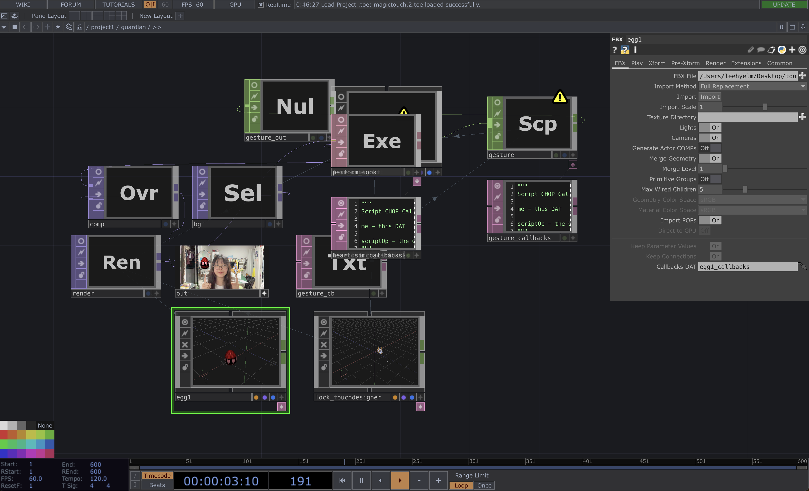

Wizard
Wizard는 관람자의 손짓만으로 마법의 상징물을 불러내는
실시간 웹캠 AR 인터랙티브 작업입니다. AI로 터치디자이너와 블렌더를
연동하여 제작하였고, 카메라 앞에서 손을 움직이면, 손가락 위로
마법 오브젝트(알·자물쇠)가 소환되고 두 손을 맞추면 하트 마법이 화면 가득 퍼집니다.
별도 장치 없이 웹 브라우저와 카메라만으로 누구나 마법사가 될 수 있습니다.
사용방법
왼쪽 검지를 편다.
오른쪽 검지를 편다.
각자의 검지를 산모양으로 합쳐 만든다.
검지를 구부려 손하트를 만든다.
손바닥을 활짝 펼친다.
/* 네거티브 하트 로크온~ 오픈 하트~(나도 이제 아무?) */
터치디자이너로 로딩하면 더 멋졌는데...
